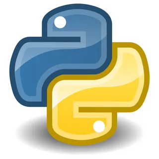
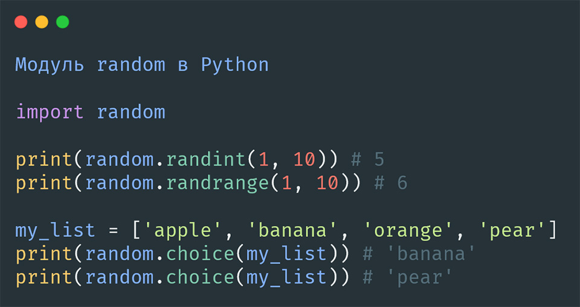

1. История создания Python

Python — высокоуровневый язык программирования общего назначения. Его разработал нидерландский программист Гвидо ван Россум.
Работа над Python началась в конце 1980-х годов. Первый публичный выпуск языка состоялся в 1991 году.
Название Python связано не со змеёй, а с британским комедийным шоу «Monty Python's Flying Circus», которое нравилось создателю языка.
Главной целью разработки было создание простого и удобного языка, код которого легко читать и понимать.
Python известен простым синтаксисом и большим количеством готовых библиотек.
Со временем Python получил широкое распространение в веб-разработке, анализе данных, автоматизации, научных исследованиях и машинном обучении.
2. Краткий обзор языка

Python является интерпретируемым языком программирования с динамической типизацией. Он поддерживает несколько подходов к программированию, включая объектно-ориентированный, процедурный и функциональный.
Одной из главных особенностей Python является простой синтаксис. Благодаря этому язык часто используется для обучения программированию.
Основные особенности Python:
- простой и понятный синтаксис;
- большое количество библиотек;
- кроссплатформенность;
- поддержка объектно-ориентированного программирования;
- широкое применение в различных областях.
Где используется Python:
- веб-разработка;
- анализ данных;
- искусственный интеллект;
- автоматизация задач;
- создание приложений.
Сравнение некоторых характеристик
| Характеристика | Python | Описание |
|---|---|---|
| Тип | Высокоуровневый | Синтаксис близок к обычному языку |
| Типизация | Динамическая | Тип переменной определяется во время выполнения |
| Парадигмы | Несколько | ООП, процедурное и функциональное программирование |
| Применение | Различные области | Веб, данные, ИИ, автоматизация |
3. Примеры кода на Python
Ниже приведены простые примеры программ на языке Python.
Пример 1. Вывод текста
print("Hello, World!")Пример 2. Сложение двух чисел
a = 5
b = 10
summa = a + b
print(summa)Пример 3. Условие
age = 18
if age >= 18:
print("Совершеннолетний")
else:
print("Несовершеннолетний")Пример 4. Цикл
for i in range(1, 6):
print(i)Пример 5. Функция
def hello(name):
return "Привет, " + name
print(hello("Анна"))Нумерованный список действий программы
- Пользователь запускает программу.
- Программа получает необходимые данные.
- Python выполняет команды.
- На экран выводится результат.
4. Использованные источники
Для дополнительного изучения языка можно использовать следующие ресурсы: